一键生成 3D 模型，直接进游戏引擎
文字或图片进，游戏可用的模型出——本地完成减面、LOD、碰撞体、轴心与尺寸，再直接送进你的 Unity 工程。生成由云端服务完成，用你自己的 API 密钥；本机不需要任何大模型权重。
Windows 10 / 11，64 位 · 安装版会自动更新 · 程序未签名，SmartScreen 提示时点「更多信息 → 仍要运行」 · SHA-256 见 Release 说明
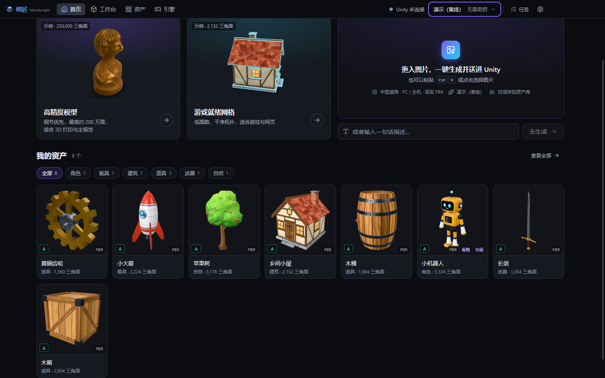
演示视频
第二集：社区二创角色大肥鱼（DeepSeek 鲸鱼娘）——上集用一张设定图生成了 3D，这集在模匠里绑骨、生成待机 / 行走 / 奔跑三个动作，再一键送进 Unity 6 跑起来，星璇客串；片头是三格 AI 漫画，其余全程实录（1 分 54 秒）。
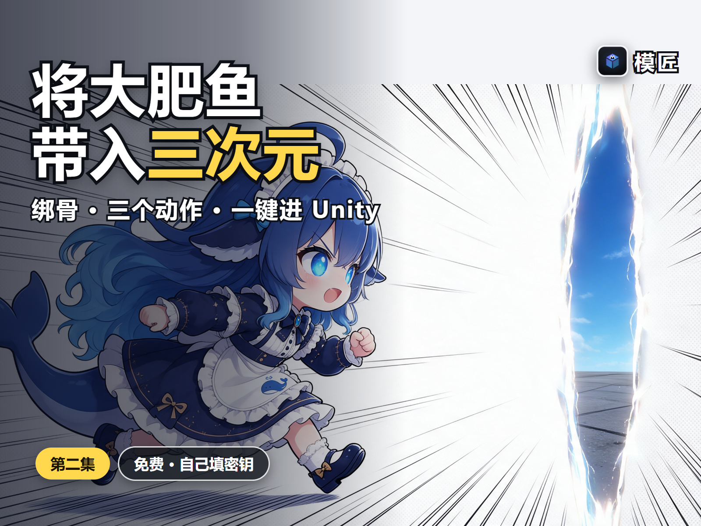
在 B 站观看第二集 → · 竖屏版 · 第一集：打破次元壁，让纸片人站进 Unity（1 分 46 秒）
角色「大肥鱼 / 鲸鱼娘」为社区二创形象：原型 上善无形，DeepSeek 女仆版二设 ZipZipPipe（CC BY-NC-SA 4.0）；设定图来自「鲸鱼娘开源资产库」。视频中的 3D 模型由模匠生成，按 CC BY-NC-SA 4.0 共享，非商业用途；与 DeepSeek 官方无关。
云端生成之外的一切，都在本地做好
生成只是一步。模匠把这一步前后的工作做成一条流水线，每一步都能看、能改、能验收。
准备输入
图片自动抠图、构图、尺寸适配；拆分三视图 / 四视图设定图（任意网格、标签、特写框、地面线，自动判断视图方向归位）；一张正面图让概念图服务画出姿势一致的四视图；提示词优化（离线模板或你自己的大模型）；批量一行一个描述。
预设与预检
14 种资产类型 × 8 种目标平台 × 5 种风格，自动换算面数预算、贴图尺寸、LOD、碰撞体、轴心与真实尺寸；「展示 / 影视级」一档直接要最高几何精度和 4K 贴图；花积分之前逐项预检图片、提示词、参数、费用与余额，相对视图镜像了会提醒并一键修复。
云端生成
Tripo（中国区 / 国际区自动识别）、Meshy、腾讯混元生 3D，用你自己的密钥；内置离线演示服务，无需密钥即可走通整个流程。计费请求绝不自动重发。
本地后处理（免费）
减面到预算、LOD 链、碰撞体、轴心与尺寸校正、Unity 贴图打包；资产页可多选批量处理，一次把一批道具从 PC 预算改成移动端预算。
三道关卡验收
生成后、后处理后、导入 Unity 后各一道，给出 A–D 等级，每一项都说明问题和处理办法；Unity 那一关由插件回传的真实导入结果判定。
直达 Unity
一键写入工程的 Assets/Modelwright/；装了插件会自动建材质、带 LODGroup 与碰撞体的预制体并放进场景。桌面端和插件只走本机回环地址。
截图
界面为简体中文，可切换英文。
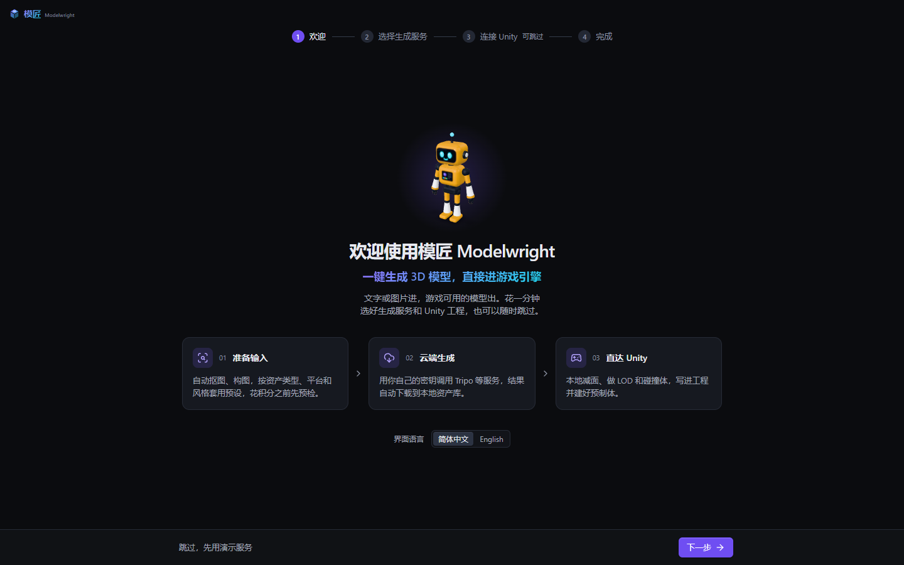
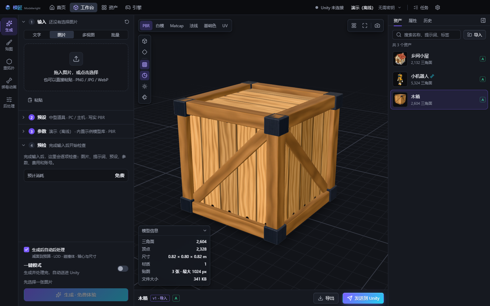
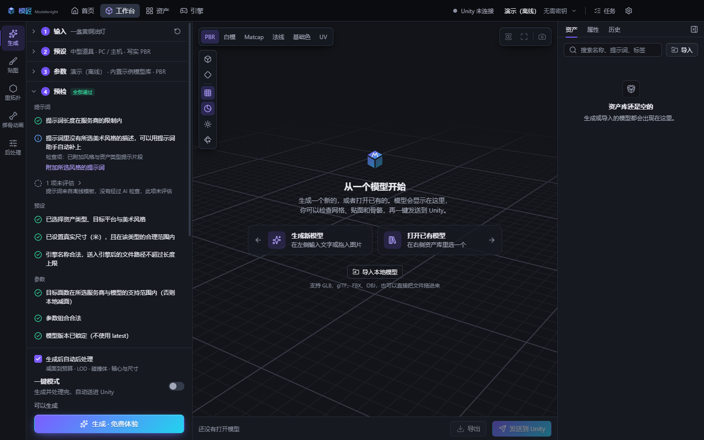
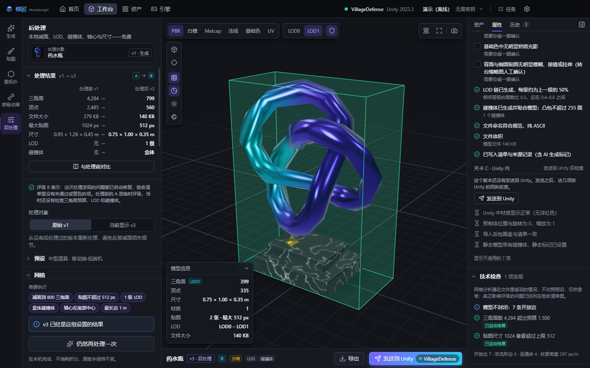
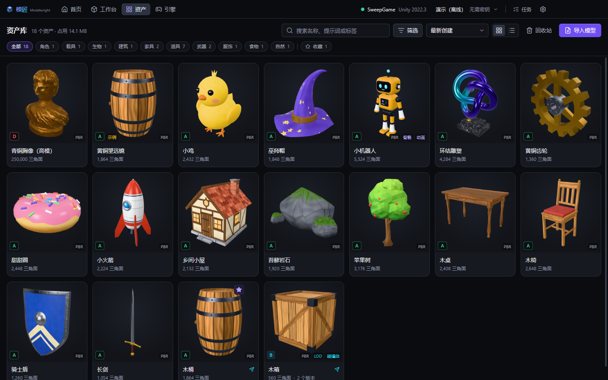
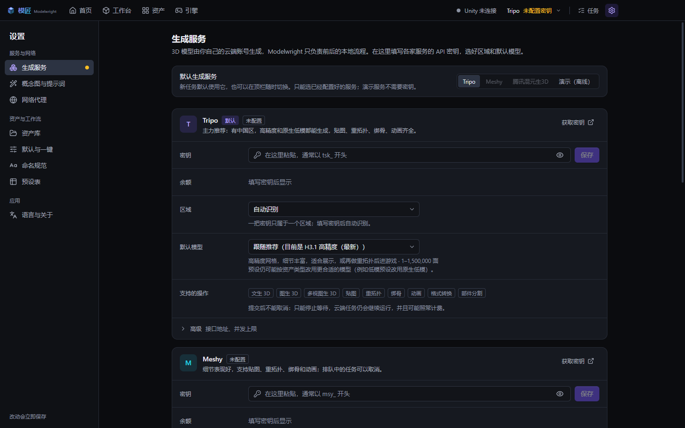
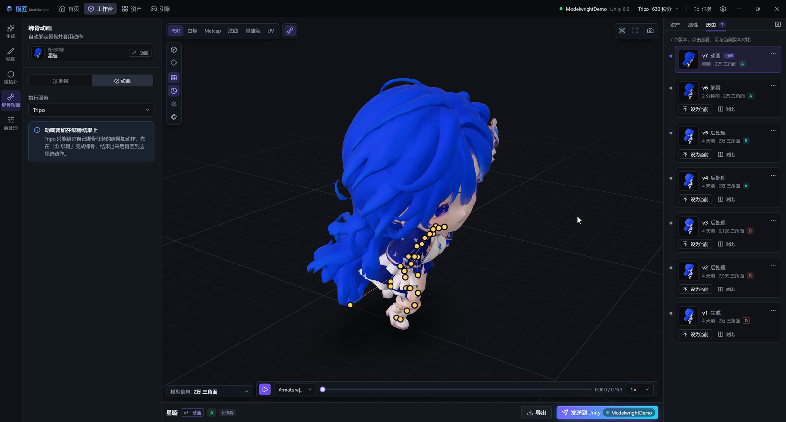
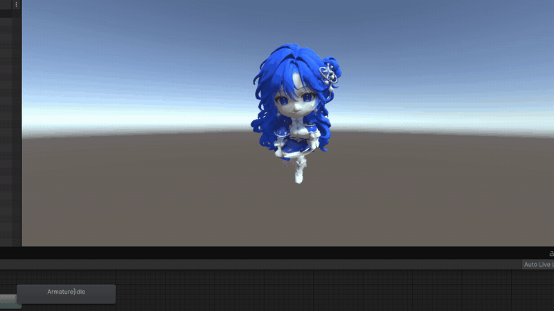
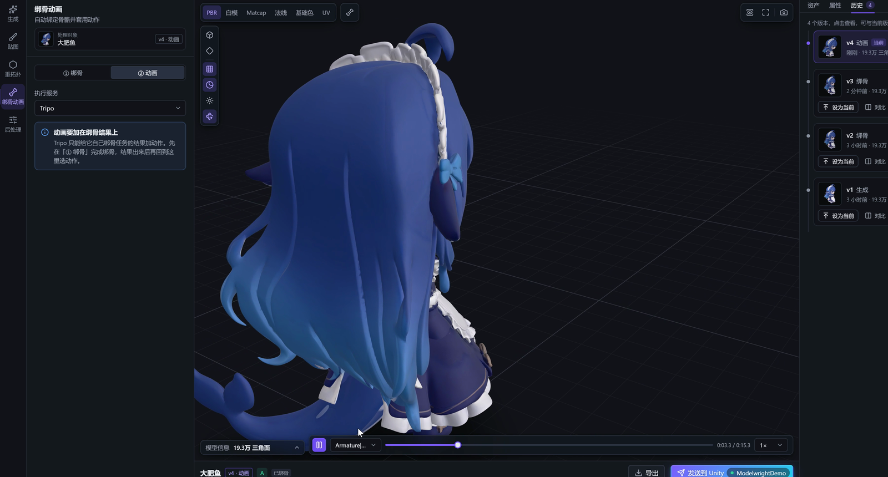
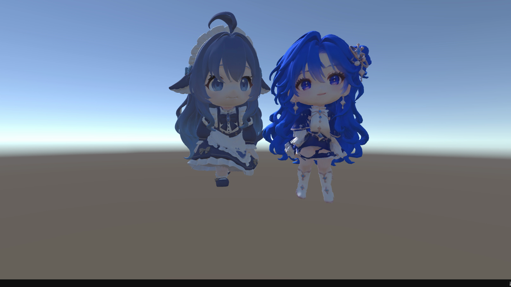
第一次使用
四步走通流程
- 打开应用进入引导：选择生成服务。还没有密钥就选 演示（离线）——返回内置示例模型（带「示例」标记），用来走通预设、预检、后处理、验收、送进 Unity。
- （可选）连接 Unity：应用会列出 Unity Hub / 团结 Hub 里的工程，也可以粘贴工程路径；点「安装插件」。
- 在首页把一张图片拖进「拖入图片，一键生成并送进 Unity」，或者输入一句话描述。
- 结果出现在首页和「资产」页；在「工作台」里查看网格、贴图、骨骼，做后处理、导出或发送到 Unity。
配置真实的生成服务
| 服务 | 获取密钥 |
|---|---|
| Tripo（推荐） | 中国区 / 国际区，填入后自动识别 |
| Meshy | meshy.ai（会员制：先订阅 Pro 会员，API 才可用） |
| 腾讯混元生 3D（TokenHub） | 腾讯云 TokenHub：「启用管理」按模型领取免费额度或开通后付费，「API Key 管理」创建 sk- 开头的 Key（地域选广州）；应用内有带截图的接入指引 |
密钥只写入、不回显，由 Windows 加密保存在本机；界面、日志和任务记录里都不会出现密钥原文。网络默认跟随系统代理。
连接 Unity
支持 Unity 2022.3 LTS、团结引擎 1.x、Unity 6；Built-in / URP / HDRP。发送之后得到什么，取决于工程当时的状态：
| 工程状态 | 结果 |
|---|---|
| 已装插件，编辑器开着（已连接） | 立即导入：按渲染管线生成材质，做好带 LOD 和碰撞体的预制体，放进场景，并把导入结果回传，验收清单的「Unity 内」一关据此判定 |
| 已装插件，编辑器没开 | 文件先写进工程，下次打开或刷新时由插件完整导入（不放进场景，没有回执） |
| 没装插件 | 只写入文件到 Assets/Modelwright/，由 Unity 按默认方式导入，没有预制体 |
GLB 需要 glTF 导入器（glTFast）：工程里没有时，应用会让你选择「安装 glTFast（推荐）／云端转成 FBX／本地导出 OBJ」。带骨骼的模型在装了 glTFast 的工程里可以直接按 GLB 发送（Generic 骨架，不花积分）。
验证情况与已知限制
已验证
- 真实应用的自动化测试覆盖各个页面，另有七段完整的用户旅程和全部界面在两种窗口尺寸、两种语言下的巡检。
- 付费流程用本机模拟的接口逐请求计数：一次提交（包括双击、重试、批量）只发出应有的那些计费请求。
- 三个发布文件由同一份源码构建；安装目录和便携版通过自检（抠图引擎、网格管线、Draco 解码、第三方许可清单）。
- 用假密钥访问各服务商真实接口：地址、TLS、鉴权失败识别正确。
- Tripo 真实密钥（中国区）：图片生成成功；0.1.2 把「绑骨 → 动作」整条链逐项实测跑通——双足角色 v1.0 + 原生骨骼命名，idle / walk / run 等动作、多动作 FBX、原地播放全部成功，四足生物 v2.5 + 四足行走成功。
- Unity 6000.6.4f1 真实编辑器（2026-10-08）：编辑器开着时安装插件、装 glTFast、自动连接、发送 GLB、生成材质 / 预制体并放进场景、回传结果；发现的两个问题已在 0.1.1 修复。2026-10-09 用 0.1.2 发送带动作的角色：Humanoid Avatar 有效，Animator 自动配好 idle / walk / run 三个动作。2026-10-12 用 0.1.4 重新目视验收：Tripo 绑骨 + 三个动作的角色送进 Unity 6 后进 Play 模式，待机 / 行走 / 奔跑都在原地正常播放、朝向正确——0.1.2 / 0.1.3 在 Unity 6 里一进 Play 角色就消失的问题已修。
- Meshy 与混元真实密钥（2026-10-09）：Meshy 跑通图生 3D → 绑骨 → 动作 → Unity；混元（TokenHub）跑通图生 3D → 绑骨 → 预设动作 / 文字描述动作 → 格式转换 → Unity。这两条链只核对了 Unity 的回执，Play 模式还没有目视验收。
- 裙摆保形与大肥鱼全链路（2026-10-12，0.1.5）：星璇在 Unity 6000.6.4f1 的 Play 模式里 idle / walk / run，裙子不再翻板（原地更新、新副本两条路径）；大肥鱼（DeepSeek 鲸鱼娘，社区角色）从三视图设定图到拆分归位、预检镜像修复、展示级生成、绑骨，验收 A；用一张正面图生成的 A 姿势四视图再生成一次，两只手都是干净的五指。
- 单图误判成设定图的修复（2026-10-13，0.1.6）：用触发问题的两张大肥鱼 A 姿势瓦片（原图与 512 px 缩图）和五张真实设定图（鲸鱼娘资产库三视图、两张 Banana Pro 四视图、仓库自带两张）复测——瓦片不再被判为设定图，五张设定图全部仍被识别；单元测试覆盖「被竖缝切开的一张图」与「并排的两个对称道具视图」两种边界。
- 面部平滑、裙摆四象限与混元撕裂蒙皮（2026-10-13，0.1.7）：Unity 6000.6.4f1 批处理探针（插件自己的导入管线，静止 / 摆姿网格离线渲染）——大肥鱼 8 组画上去的五官找到 7 组放回皮肤、5633 个顶点移动，静止姿势渲染里眼窝消失，三个动作的包围盒不变；星璇 4 个象限辅助骨、1727 个顶点改刷；混元动作 FBX 的 skinStretch 1.67 触发警告，Tripo / Meshy 的文件无警告。预览器的面部平滑与裙摆四象限各有单元测试，「不是设定图」有端到端测试。没有在 Play 模式目视裙摆四象限的跟随角度。
- 神经元绑定、试机场与外部动作文件（2026-10-25，0.1.8）：合成形状的单元测试（球加四手找到 4 个部件、火柴人判为人形并从脚尖判出朝向、立方体判为整体、开放片判为不封闭）；流水线写出骨骼、四级 LOD 都有权重、三段动作、glTF 校验无错误；Unity 6000.6.4f1 批处理探针导入该 GLB——4 个蒙皮 LOD、7 根骨骼、Animator 3 个状态、行走和动作时的包围盒在变；试机场打开后场景有跟随摄像机、灯光、地面和挂着控制器的角色；外部动作文件的库存与移除有单元测试。没有在真实编辑器里按 Play 走过试机场，Mixamo 的真实文件没有实测。
- 真实检验与内置试机场（2026-10-25，0.1.9）：端到端在真实应用里导入球加四手的 GLB → 神经元分析判定 ok、4 个神经元 → 绑定 → 新版本 animated、3 段动作 → 视口动画条 → 试机场里 3 段动作、按 W 切到 walk；Unity 6000.6.4f1 PlayMode 测试打开插件的试机场场景——角色先站着、巡逻开始后 2.5 秒走了 2.43 m、Animator 处于 walk、摄像机在上方朝向角色、蒙皮包围盒随动作变化（1 项通过）；Meshy 的 Walking.fbx 作为外部动作挂到 Tripo 绑骨的星璇上，探针回执 4 段动作、MeshyWalk 状态播放时包围盒在变；10 个示例模型与 5 个真实 GLB 的分析普查（小鸡 2 条腿、椅子 / 石头 / 绳结判整体、大肥鱼呆毛不再是头）。真实检验里发现并修了两处：绑定后的版本被标成静态；试机场画出了碰撞体凸包。
- 动作设计台与自动关节映射（2026-10-25，0.1.10）：映射 8 组骨架的单元测试（真实 Tripo 大肥鱼 41 根含扭转骨、Mixamo、混元式根骨、示例机器人、名字全乱的机器人、四足加尾巴、神经元链、用户修正），模板 12 项（独立前向运动学验证步态相位、膝盖时机、首尾闭合、跳跃起止、挥手单臂、四足对角、厘米骨架与米骨架一致），three.js 回放 3 项，流水线烘焙 4 项（glTF 校验 0 错误）；真实应用端到端——示例机器人映射 13 根为人形 → 保存 run → 试机场 4 段、Shift 用设计的 run → 烘焙出带 4 段动作的新版本；本机真实大肥鱼 Tripo FBX——映射为人形、保存 run 和 jump、试机场 5 段：W 走 Armature|walk、Shift 跑设计的 run、空格跳设计的 jump；Unity 6000.6.4f1 批处理探针导入烘焙后的机器人 GLB：导入成功、无警告、Animator 8 个状态，设计的 jump 中心高度 0.61 → 0.86 m、run 前后跨度 0.54 → 0.82 m，无 NaN。真实检验里发现并修了三处：根骨和 Pelvis 被当成部件摆动把角色掀翻、四足躯干链被判成腿、跳跃首帧肘部未归零。
- 绑定姿势修复、生成上限与极限测试（2026-10-25，0.1.11）：绑定姿势单元测试（弓背的节点姿势经 ×0.01 的骨架节点摆回绑定姿势，本就一致的骨架不动），预设映射 29 项（展示级向服务商要档位上限、空面板不评视图数）；端到端——示例机器人的动作设计台 + 试机场、本机真实大肥鱼 Tripo FBX（站直、脸正常、空格跳稳定）；真实 Tripo 两轮极限测试——整体顶配 70 积分：1,887,300 面、8192² 贴图、59 MB，后处理不减面、质量 A；自动分部件 90 积分：15 件、每件一个壳但都有开放边、头发脸躯干切成一块、眼睛鞋尾巴手臂鱼鳍分开、15 张 8K 贴图。逐边统计证实 v1 / v5 都是开放边 0 的单一封闭壳：被遮挡区域不存在是生成方式所致，不是参数。
- 拆件建模第一阶段（2026-10-26，0.1.12）：单元测试 3676 通过（276 个文件）；真实 Tripo 积分——大肥鱼 41 张部件图（国际区）、10 件部件模型（头五次，中国区），八次组装；头的转台 36 帧逐帧看过（一张脸、后脑干净、有耳朵），六件各 12 帧看过；组装体与整身直出版并排对照：部件本身干净，拼装靠固定规则给起点、手动组装收尾；带动作的整身大肥鱼发送到 Unity 6000.6.4f1 并放进试机场，批处理 PlayMode 测试通过（巡逻 2.435 m、Animator 处于 walk、蒙皮包围盒随动作变化）。端到端四个门禁 73 条中 72 条通过，剩 1 条是本机窗口 1103×703 的环境差异。
尚未验证
- Meshy、混元的其余接口：贴图、重拓扑、多视图、文生 3D，以及混元的极速版、3.0 低模和国际站，仍只用模拟服务测试过。第一次请用少量积分试一次。
- 混元动作版本在 Unity 里的蒙皮：0.1.7 查明是文件本身的绑定矩阵与层级对不上（three.js、Unity、混元自己的转换都撕裂），不是导入设置能修的；插件测出撕裂就报警告、验收清单按问题处理，请改用 Tripo / Meshy 的动作版本或重新绑骨。Meshy 带动作版本的 Play 模式同样还没有目视验收。
- Unity 2022.3 与团结引擎：插件通过了离线编译检查，尚未在这两种真实编辑器里验收。
- 安装程序的卸载流程没有实际运行过；安装版已在 Windows 11 上实际安装并运行。
- 神经元绑定与试机场的边界：部件只从身体上长一层（手指、头上的耳朵并进所在部件）；紧贴身体的手臂、裙子里的腿几何上分不出来（面板按资产类型提示）；动作是程序化摆动不是步态，脚不贴地；细于一格体素的部件会被忽略（可选「精细 96」）；既没有腿也没有粗头的模型朝向按 +Z 假定。内置试机场没有物理引擎（木箱是方块碰撞，没有坡和台阶）；真实的非人形生成模型还没有拿到手测；Mixamo 的真实下载文件没有测（用的是 Meshy 的动作文件，机制相同）。
- 动作设计台的边界：模板是程序化摆动，不是动作捕捉（脚不贴地、没有 IK），想要更真的动作仍走服务商动作库或外部 FBX；FBX 版本的设计动作只在应用内可用，要进 Unity 请以 GLB 输出绑骨再烘焙；映射依赖"身体大致直立、左右对称"，躺着的、单腿的、多头的骨架需要手动修正。
- 极限测试与分部件建模的边界：极限测试只跑了一个角色、每轮一次，定的是基线不是规则；被遮挡区域不存在和"画上去的线变成浮雕"（睫毛成鳍、瞳孔成凸环、刘海在额头刻沟）这两件事这一版只是查清了，分部件建模只有设计草案，「部件补全」接口还没接入；8K 贴图与 200 万面的结果文件很大（59 MB / 104 MB），Tripo CDN 慢时一单要 20 分钟。
- 拆件建模的边界：只跑了一个角色（大肥鱼）：阈值是初值；组装的固定规则（§7c）给的是起点，头发在后脑仍有空隙、尾巴根藏在裙后，最后要在手动组装面板里摆；穿插检查、组装后减面、对组装版绑骨、部件补全（Tripo mesh/complete）、C3 / C6 检查、模具的导出和仓库都还没有。"只画一对鳍"这类小附件的部件图图像模型画不好（五次都带头），已并入头发。中国区的图像任务跑 5 分钟会被服务端判失败，部件图请走国际区。
- 裙摆保形与面部平滑的边界：裙摆仍没有布料碰撞（0.1.7 起前片随抬腿掀起，走路不再穿出，奔跑的极限帧膝盖仍可能擦到），头发不处理；面部平滑填平处的边缘还有些毛糙，肤色范围内的腮红、胡须会被当成皮肤，深肤色角色暂不识别。
已知限制：仅 Windows；只完整支持 Unity；本地后处理不处理带骨骼的模型和只有 FBX 的版本；拼音转写的多音字与超长描述有取舍。完整说明见 README。